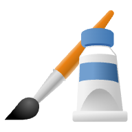
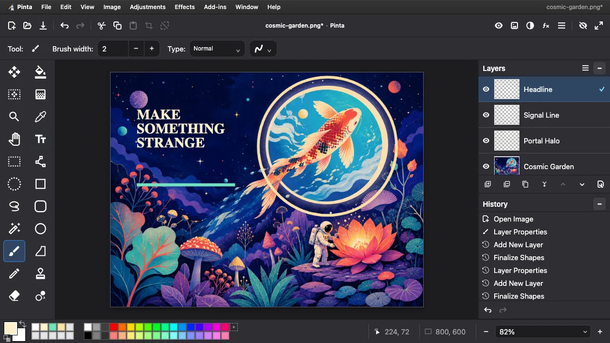

Pinta Online
paint
.
rip ↗
Free. Open source. Yours.
A little paint.
A lot of
possibility.
The desktop-style image editor, right in your browser.
Layers · Selections · 46 effects
No account. Just create.
